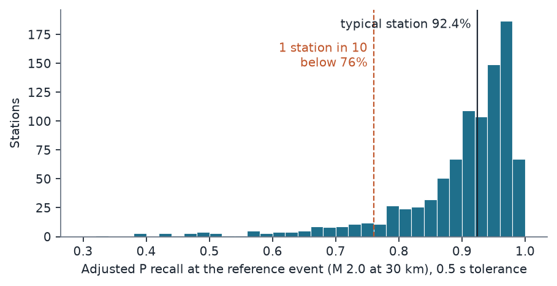
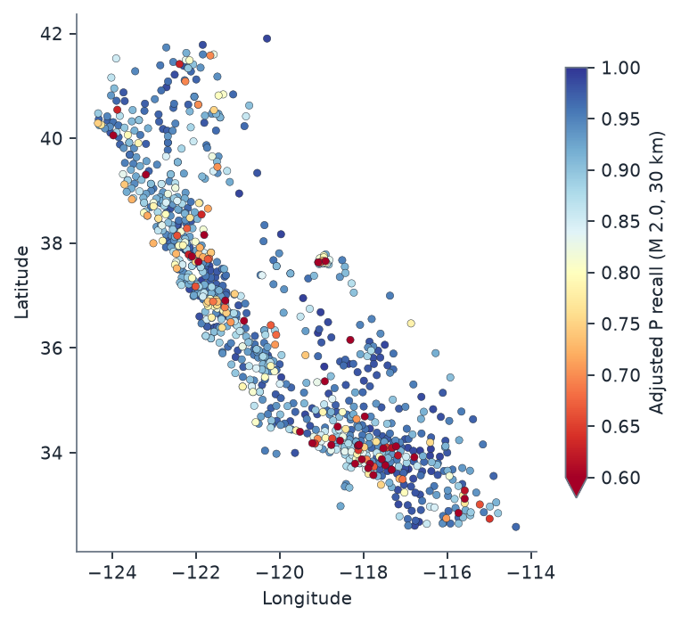
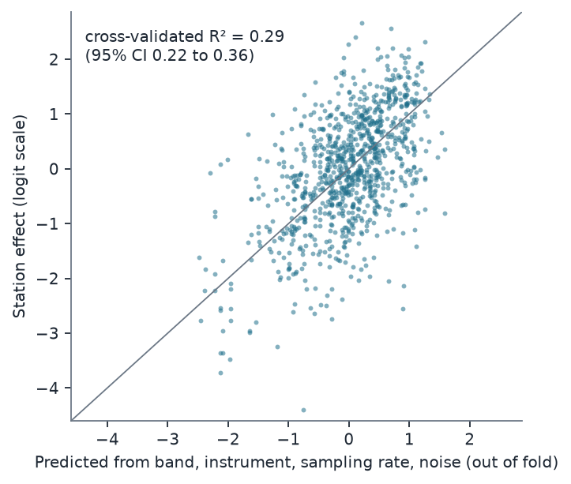

Verdict: Refuted (H1 Supported narrowly, H2 Refuted). The plan set no headline rule. The lead's hypothesis was that recall varies between stations and that station attributes explain at least half of that variation. The second part fails clearly.
- The catalogue finds 91% of analyst-reviewed P arrivals within 0.5 s. Matched picks sit a median 0.02 s after the analyst's.
- Stations differ (H1 Supported, narrowly). After adjusting for magnitude and distance, the between-station SD of recall is 0.105 (95% CI 0.096 to 0.114) at an M 2.0 event 30 km away. The rule needed at least 0.10, so the estimate passes by 0.005 and the interval includes values below the threshold. A typical station finds 92% of such arrivals; one station in ten finds fewer than 76%.
- Station attributes don't predict which stations are weak (H2 Refuted). Band code, instrument code, sampling rate and ambient noise explain 29% of the station-to-station variation in spatially grouped cross-validation (95% CI 22% to 36%). The hypothesis needed 50%.
- Exploratory: most confident P picks look like single-station detections. 59% of the catalogue's P picks with confidence ≥ 0.5 have no analyst pick and no P pick at any of the station's 5 nearest neighbours within 10 s. This is a post-hoc proxy and is labelled as such.
In plain terms
QuakeScope is a public catalogue of 4.3 billion earthquake "picks": the moments when a machine-learning model (PhaseNet) decided a seismic wave had reached a seismometer. Researchers are starting to build earthquake catalogues and training sets from it. Its authors did not compare it, archive-wide, with the arrivals that human analysts picked.
We did that for California. We took 30 randomly chosen months from 2010-2024 and every P-wave arrival (the first wave) that analysts at the Southern and Northern California data centres picked for local earthquakes of magnitude 1.5 or more within 100 km. That is half a million arrivals at about a thousand stations. The catalogue had a pick within half a second for 91% of them, usually within a few hundredths of a second.
We expected some stations to do much worse than others, and they do. A typical station catches 92% of the arrivals from a magnitude-2 earthquake 30 km away; one station in ten catches fewer than 76%. The spread is just above the size we set in advance as meaningful.
We also expected to predict the weak stations from what the station is: its sensor type, sampling rate and how noisy its site is. That failed. Those attributes explain under a third of the differences. So anyone using QuakeScope picks at a particular station should check that station's track record, which we release as a table, rather than assume it from the station's specifications.
A side finding needs confirming: most of the catalogue's confident P picks have no matching pick at any nearby station and no analyst pick. They may be noise, or tiny earthquakes that only one station recorded.
The data
The catalogue. The 2026 QuakeScope western catalogue on the anonymous S3 bucket quakescope-picks-2026. It uses
PhaseNet with the original weights (trained on Northern California data) and thresholds of 0.2. Partitions:
network={CI,NC,BK}/year=Y/month=M, for 30 months drawn 2 per year from 2010-2024 (seed 20261011; listed in Section 3
of the plan and in data/months.json). The listing of every downloaded file (key, ETag, size) is frozen in
data/manifest_picks.csv, because the bucket is being re-read from 8 October 2026.
The reference picks. These are analyst-reviewed P arrivals from the two regional data centres' public phase files:
- SCEDC (network CI): event phase files. Local earthquakes only (type
eq, geographic typel; D2). - NCEDC (networks NC and BK): monthly Hypoinverse phase archives. Only events with review status F (final), joined from the NCEDC catalogue (D1).
Both are "analyst-reviewed", not necessarily hand-picked from scratch. Some arrivals began as automatic picks that an analyst accepted or adjusted.
The filters were:
- magnitude ≥ 1.5;
- epicentral distance ≤ 100 km;
- analyst weight > 0;
- one pick per event, station and phase.
The denominator. A reference pick counts only if QuakeScope's availability table says it read that station-day, and the station is in QuakeScope's station list. A miss on a day QuakeScope never processed is not a picker failure.
| Step | P picks | Stations | Events |
|---|---|---|---|
| Reference P picks in the 30 months | 574,133 | 1,373 | 23,316 |
| Station-day read by QuakeScope (88.8%) and station listed (99.6%) | 509,760 | 1,058 | 23,038 |
| Stations with ≥ 10 picks (the H1 model) | 509,596 | 1,026 | |
| Stations with ≥ 30 picks (H2) | 949 |
About 11% of the analyst-picked arrivals fall on station-days that QuakeScope never read. That is a coverage gap for users, but outside this study's question.
The reference picks are split between the data centres: 230,292 from SCEDC (CI) and 279,468 from NCEDC (239,858 NC,
39,610 BK). The median magnitude is 1.94 (10th-90th percentile 1.57-2.75) and the median epicentral distance 50 km
(16-88 km). 56% of the picks are marked impulsive (i).
Station attributes (H2).
- Band and instrument code: the modal band QuakeScope read on the station's denominator days (D1 item 3).
- Sampling rate: from the data centres' StationXML.
- Ambient noise: log10 of the median 60-s RMS ground velocity, 1-10 Hz. It is taken from 09:00-10:00 UTC on 3 random loaded days per station, from the data centres' continuous waveforms.
Of the 949 H2 stations, 25 have no usable noise value and are left missing (22 had no data or no response; 3 had a flat, zero-amplitude trace, D3).
Method (preregistered)
Matching. A reference P pick is matched if the catalogue has a P pick at the same network and station, on any band or location code, within ±0.5 s. Matching is one-to-one, closest first. Tolerances of 0.2 s and 1.0 s are sensitivity analyses.
H1. A mixed logistic model, matched ~ M + log10(distance) + (1 | station), fitted by variational Bayes
(statsmodels BinomialBayesMixedGLM) on stations with ≥ 10 picks.
- SD_p is the SD of recall on the probability scale across station effects u ~ N(0, σ_u²), at an M 2.0 event 30 km away.
- Interval: a station-cluster bootstrap with 200 refits.
- Supported if SD_p ≥ 0.10 and the lower bound ≥ 0.05. Refuted if the upper bound < 0.10.
H2. The target is each station's posterior-mean effect, for stations with ≥ 30 picks.
- Model: gradient boosting (
HistGradientBoostingRegressor, defaults) on band code, instrument code, sampling rate and log noise. - Cross-validation: 5-fold, grouped by 1° × 1° cells so that neighbouring stations are not split between training and test. Pooled out-of-fold R², with a 2,000-draw station bootstrap.
- Supported if R² ≥ 0.50 and the lower bound ≥ 0.35. Refuted if the upper bound < 0.50.
Results
Recall and timing (descriptive)
| Value | |
|---|---|
| Pooled P recall, ±0.2 s / ±0.5 s / ±1.0 s | 86.4% / 91.0% / 92.3% |
| Pooled S recall, ±0.5 s (196,118 S picks) | 88.8% |
| By data centre (P, ±0.5 s): SCEDC CI / NCEDC (NC and BK) | 92.6% / 89.7% |
| Timing of matched P picks, catalogue − analyst: median (MAD) | +0.022 s (0.022 s) |
| Matched P picks within ±0.1 s of the analyst | 85.9% |
The timing offset is similar across bands: median +0.03 s on HH, +0.02 s on EH and +0.023 s on HN channels
(results/tables/timing_by_band.csv). Pooled recall moves little with year (88-93%) or with distance (91.9% within
10 km, 90.8% at 60-100 km).
H1: recall varies between stations (Supported, narrowly)
| Estimate | 95% CI | |
|---|---|---|
| SD_p at M 2.0, 30 km | 0.105 | 0.096 to 0.114 |
| σ_u (logit scale) | 1.08 | |
| Recall of a typical station (u = 0) at M 2.0, 30 km | 92.4% | |
| Fixed effects (logit scale): intercept, M, log10 distance | 2.64; 0.58 per magnitude unit; −0.88 per decade of distance |
By the preregistered rule this is Supported: SD_p ≥ 0.10 and the lower bound (0.096) ≥ 0.05. The margin is thin. The point estimate exceeds 0.10 by 0.005 and the interval includes values below 0.10. The plan's power section expected H1 to be decidable "unless the true SD sits within about 0.01 of 0.10", and it does sit there.
The rule's interval condition (lower bound ≥ 0.05) is looser than its point condition (≥ 0.10). It asks only that the variation be clearly non-trivial, and by that standard it is. Whether the variation clears 0.10 specifically is not settled by these data.


The spread is in a tail of weak stations. Among the 949 stations with ≥ 30 picks, adjusted recall at the reference event has:
- a median of 92.7%;
- a 10th percentile of 76% and a 5th percentile of 66%;
- 14% of stations below 80% and 35% below 90%.
SD_p depends on the reference event. Recall is near its ceiling, so the same logit-scale spread (σ_u = 1.08) is
smaller on the probability scale where recall is higher. Evaluated at other events (results/tables/checks/misc.json,
post hoc), SD_p is:
| Reference event | Typical recall | SD_p |
|---|---|---|
| M 2.5 at 30 km | 94% | 0.088 |
| M 2.0 at 60 km | 90% | 0.121 |
| M 1.5 at 30 km | 90% | 0.123 |
| M 1.5 at 90 km | 86% | 0.149 |
The preregistered reference event (M 2.0, 30 km) is near the middle of the data: the median magnitude is 1.94 and the median distance 50 km.
Secondary analyses (preregistered).
| Analysis | SD_p | Reference picks |
|---|---|---|
| Tolerance ±0.2 s | 0.107 | 509,596 |
| Tolerance ±1.0 s | 0.106 | 509,596 |
| S picks (±0.5 s) | 0.176 | 195,079 |
Impulsive (i) reference picks only |
0.086 | 284,605 |
The busiest sampled month (June 2020) holds 6.2% of the picks, below the 25% that would have triggered the leave-one-month-out check.
The S-pick spread is larger. On impulsive arrivals alone, which an analyst marks as clear, the spread drops below 0.10 (0.086). Part of the station-to-station variation is therefore in emergent arrivals, which are harder for analyst and picker alike.


Where the weak stations are (post hoc, descriptive). Of the 949 stations, 95 have adjusted recall below 76% (the 10th percentile).
- Most are short-period (EH) stations: 78 of the 95, against 476 of all 949. CI's EH stations have a median adjusted recall of 79% (n = 83), against 95% for its broadband HH stations (n = 287). NC's EH stations, by contrast, have a median of 91% (n = 393).
- Some areas have more than their share. 18% of stations in the Los Angeles basin fall below 76%, as do 13% around Long Valley and Mammoth and 14% in the San Francisco Bay Area. That compares with 9% elsewhere.
The regional boxes were drawn after looking at the map, so these shares are descriptive only.
H2: station attributes do not predict the weak stations (Refuted)
| Model (stations with ≥ 30 picks, n = 949) | CV R² | 95% CI |
|---|---|---|
| Gradient boosting, four primary attributes (H2) | 0.29 | 0.22 to 0.36 |
| Linear model, same attributes (secondary) | 0.29 | 0.22 to 0.35 |
| Gradient boosting + network, elevation, number of picks (secondary) | 0.32 | 0.25 to 0.39 |
| Reliability-corrected H2 (noise share of station effects 6%) | 0.31 |
The upper bound (0.36) is below 0.50, so H2 is Refuted. The reliability correction shows that the shortfall is not estimation noise in the station effects: those are well estimated (median 378 picks per station), and correcting for their noise only lifts R² to 0.31.


What the attributes do capture (post hoc, results/tables/checks/h2_exploratory.csv and h2_descriptive.json).
| Predictors (gradient boosting, same folds) | CV R² | 95% CI |
|---|---|---|
| Band code alone | 0.11 | 0.07 to 0.15 |
| Log noise alone | 0.08 | 0.00 to 0.14 |
| Instrument code alone; sampling rate alone | 0.00; 0.00 | −0.01 to 0.00 (each) |
| Network alone | 0.00 | −0.02 to 0.03 |
| Location alone (latitude, longitude) | −0.13 | −0.22 to −0.05 |
| Primary attributes + location | 0.22 | 0.14 to 0.30 |
| Primary + secondary attributes + location | 0.32 | 0.25 to 0.39 |
| Primary attributes, maximum-likelihood station effects as the target | 0.29 | 0.22 to 0.36 |
Instrument code and sampling rate barely vary: 908 of the 949 stations are H (high-gain seismometer) instruments
and 923 sample at 100 Hz.
Two attributes do the work: band and noise.
- Band. Short-period (E band) stations average −0.39 on the logit scale, against +0.38 for broadband (H band).
- Noise. The noisiest third of stations average −0.54, against +0.38 for the quietest third (Spearman −0.36). Stations without a usable noise value average −0.67.
- Together they interact. The four-attribute model, whose other two attributes barely vary, reaches R² 0.29. That is more than band alone and noise alone added together (0.11 + 0.08), so the two interact. Even so, most of the variation lies within band-and-noise groups.
Location predicts nothing out of cell. Neighbouring stations in other 1° cells say less about a station than the overall mean does (R² −0.13). The station effects are local to the station, not a regional pattern that spatial cross-validation could transfer.
The H2 result does not depend on the VB estimator. With maximum-likelihood station effects as the target, R² is also 0.29.
Diagnostics added after the outcome (deviations.md D4; code/checks.py)
VB non-convergence flag. statsmodels raised "VB fitting did not converge" on every fit. The flag is set when
scipy.optimize.minimize (BFGS) reports success = False. Three refits with fixed starting seeds show why: each
stopped with "Desired error not necessarily achieved due to precision loss" after 700-790 iterations. The
gradient norms were 6e-5 to 4e-4, over about 2,060 parameters, and the ELBO was identical to nine significant figures.
All three reach the same optimum as the primary fit: σ_u 1.0780, and SD_p 0.10489 against the primary 0.10489. The
primary estimate is therefore reproducible despite fit_vb's unseeded starting values. An L-BFGS-B refit stopped
earlier (gradient norm 36, a worse ELBO) and gives SD_p 0.1051.
An independent maximum-likelihood fit of the same model, by adaptive Gauss-Hermite quadrature (as in lme4's
glmer; tests/aghq_test.py recovers a known station SD on synthetic data):
| Fit | σ_u | SD_p | Intercept, M, log10 d |
|---|---|---|---|
| VB (primary) | 1.078 | 0.1049 | 2.635, 0.582, −0.878 |
| ML, Laplace (1 node) | 1.065 | 0.1041 | 2.620, 0.576, −0.869 |
| ML, 15 nodes | 1.067 | 0.1044 | 2.619, 0.576, −0.869 |
Both ML fits converge to the same values from the VB estimate and from zero. The ML spread is about 1% smaller, as expected for a maximum-likelihood variance component. ML also puts SD_p above 0.10, so the H1 verdict does not depend on the estimator. The bootstrap interval was computed with VB only.
Bookkeeping. The station order of the VB effects matches the model's level names (1,026 of 1,026), and the effects track raw station recall (Spearman 0.98).
Exploratory: a false-pick proxy
The plan listed a false-pick proxy as exploratory. The proxy counts catalogue P picks with confidence ≥ 0.5 that have
no reference pick at the station and no catalogue P pick at another station within 10 s. analysis.py had not
implemented it, so it was added after the outcome (D4).
The proxy as preregistered is uninformative.
- Definitions fixed in D4: "no reference pick" means none of either phase at the station within 1 s; "another station" means any CI, NC or BK station.
- Result: 7,485 of 9,391,601 confident P picks, or 0.013 per station-day.
- Why it says little: across CI, NC and BK the catalogue holds about 0.4 P picks per second. A ±10 s window therefore almost always contains another station's pick by chance.
A post-hoc variant: isolation from the 5 nearest stations (checks.py falsepick_nn). A pick is isolated if none of
the station's 5 nearest catalogue stations has a P pick within 10 s. Across stations, the median of the mean distance to
those 5 neighbours is 18 km.
- The variant separates real and unconfirmed picks. Of the confident picks that match an analyst pick, 0.9% are isolated; of those that do not, 62% are.
- Result: 59% of all confident P picks (5.57 million of 9.39 million) are isolated and unreferenced. That is 9.4 per loaded station-day pooled. Across the 949 H2 stations the median is 3.6 per day and the 90th percentile 23 per day.
- Recall and false picks go together: stations with higher recall also have more isolated picks (Spearman +0.28). That is consistent with a trade-off between sensitivity and false picks at the station level.
What the isolated picks could be.
- Noise detections. The likely majority.
- Tiny earthquakes recorded at one station only. Their number is unknown.
- Picks whose neighbours had a data gap that day. For picks an analyst confirmed, this effect is bounded by the 0.9% figure.
The proxy says the catalogue's P picks at confidence ≥ 0.5 are not, by themselves, a list of earthquake arrivals. A proper precision study would need event association or template matching.
What this means
For users of the catalogue. At these networks QuakeScope's original-weight PhaseNet picks find nine in ten
analyst-reviewed P arrivals of local M ≥ 1.5 events, with near-analyst timing. That is a usable catalogue. But recall
is not uniform. Roughly one station in seven sits below 80% at a typical event, and the station's specifications do
not identify it. Studies that depend on complete phase coverage at particular stations should check those stations
directly. The released table results/tables/station_reliability.csv gives every station's adjusted recall, with an
interval and the attributes used here.
For the QuakeScope team.
- Weak stations are station-specific. Short-period sensors and noisy sites do worse, but most of the variation is
neither instrumental nor regional, and location predicts nothing out of cell. That argues for per-station
evaluation, and perhaps site-aware calibration, of the staged
quakescope2026weights. - False picks may be the larger gap. On the post-hoc proxy, most confident P picks lack any corroborating pick nearby. A precision study is a natural next lead.
What this does not show.
- Not precision. Recall against analyst picks says nothing about false picks. The proxy is crude and post hoc.
- Not other regions. Not other networks (UW, NN, UU and others in the western catalogue), not the 2025
jma_wcarchive, and not small events (M < 1.5). - Not a true miss rate. Reference picks are the data centres' reviewed picks. Some started as automatic picks, and analysts pick some arrivals that a picker cannot be expected to see.
Limitations
- Analyst picks are a reference, not ground truth. Emergent arrivals have real timing uncertainty; the impulsive subset is the cleaner comparison (SD_p 0.086).
- H1 sits on its threshold. The verdict follows the rule, but a reasonable reader could call the H1 result "about 0.10".
- The model assumes station effects are normal on the logit scale. The observed distribution has a long low tail (Figure 1). SD_p summarises it through σ_u, and the quantiles of the station table describe the tail directly.
- The noise covariate is a 3-hour sample (three one-hour windows at night local time). It may misrepresent stations whose noise is daytime or seasonal (urban, coastal).
- Coverage. Only CI, NC and BK, and only 30 sampled months. 11% of analyst-picked arrivals fall on station-days QuakeScope did not read, and are excluded.
- Variational Bayes. Every fit carries statsmodels' non-convergence flag. The diagnostics above show that the flag reflects BFGS's precision-loss stop at a near-zero gradient, and that maximum likelihood agrees.
Deviations
- D1 (before matching): implementation details. NCEDC status F only; a 1 km distance floor; the band covariate taken over denominator days rather than matched days; the noise-hour method; the bootstrap labels.
- D2 (before matching): SCEDC header variants; local events only.
- D3 (after a crash, before any outcome was seen): three flat-trace stations' log noise of −∞ set to missing; H1 saved before H2; 13 bootstrap workers; a smoke test of the whole pipeline.
- D4 (after the outcome): the diagnostics and the exploratory false-pick work above, plus figures. No verdict changed.
Reproduce
code/run_fetch.sh # catalogue partitions, availability, stations, phase files, StationXML (about 2.4 GB)
venv/bin/python code/parse.py && venv/bin/python code/covariates.py 12 && venv/bin/python code/match.py
venv/bin/python code/analysis.py # H1 (about 4 h with 13 workers), H2, secondary
code/run_checks.sh && code/run_aghq.sh # D4 diagnostics
venv/bin/python code/checks.py falsepick_nn
OMP_NUM_THREADS=2 venv/bin/python code/figures.py
Tests: tests/synthetic_test.py (recovery of a known station SD and covariate structure), tests/smoke_main.py
(the whole main() on synthetic data), tests/aghq_test.py (the ML cross-check).
Data and citations
- QuakeScope: Ni, Y., Denolle, M. A., Thomas, A. M., Hamilton, A., Münchmeyer, J. et al. (2025). QuakeScope.
Seismica 4(2), doi:10.26443/seismica.v4i2.1738. Picks CC0, from
s3://quakescope-picks-2026(western). - SCEDC (2013): Southern California Earthquake Data Center, Caltech, doi:10.7909/C3WD3xH1. Event phase files and continuous waveforms from the public AWS bucket.
- NCEDC (2014): Northern California Earthquake Data Center, UC Berkeley Seismological Laboratory, doi:10.7932/NCEDC. Phase archives, catalogue and continuous waveforms from the public AWS bucket.
- PhaseNet: Zhu, W. and Beroza, G. C. (2019). Geophys. J. Int. 216, 261-273.
- Released tables (derived):
results/tables/station_reliability.csv,primary.json,secondary.csv,timing_by_band.csv,h1_bootstrap_draws.csv, andresults/tables/checks/.